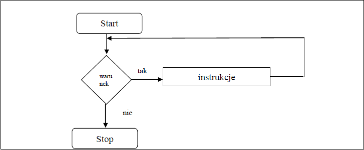

Pętlę typu while jest pętlą z kontrolowanym wejściem tzn. najpierw jest obliczany warunek a po jego spełnieniu wchodzimy do pętli i wykonujemy instrukcje z niej.
while (Wyrażenie_logiczne)

{
Instrukcja1;
………………………………………..
InstrukcjaN;
}
Jeśli Wyrażenie_logiczne ma wartość logiczną zera, to nie zostaną wykonane Instrukcje czyli nie nastąpi wejście do pętli..